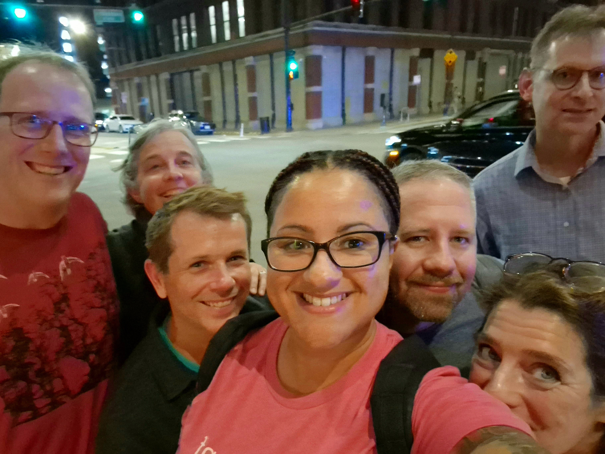
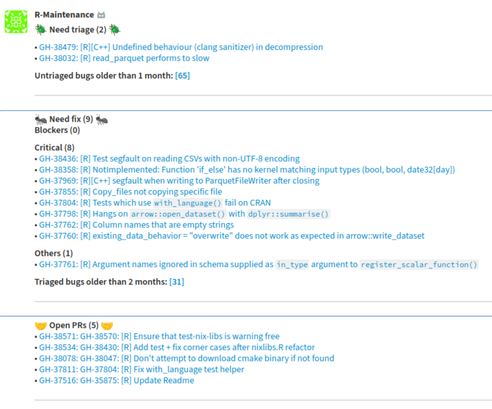

Here’s a summary of my highlights of 2023!
Arrow posit::conf workshop
The biggest professional achievement for me was having the privilege of being invited to co-present a workshop with Steph Hazlitt about Arrow at posit::conf. Steph is fantastic to work with, and while writing and delivering the workshop was hard work, it paid off in the end - we received really positive feedback from attendees. The experience reignited my passion for teaching, and desire to develop those skills. I’ve applied for Carpentries instructor training, which I’m still waiting to hear back about, and I’m excited to also be working with Steph on creating a 2 hour version of the workshop, which we’re planning on teaching at user events in 2024.

Arrow R Maintenance bot
Another project I enjoyed working on was creating the Arrow maintenance bot. It pulls data from the GitHub API, aggregates the relevant bits, and then posts it to a Zulip channel (though also works for Slack). It was an itch I’d wanted to scratch for a long time, as I’d previously got this information by clicking on various bookmarks every so often whenever I remembered. The output is shown in the screenshot below; basically, it summarises new bug tickets which need investigating, investigated bugs which need a fix, and open PRs which may need reviewing. 
There are more aspects of arrow maintenance which I’d love to automate and pull together in dashboard form - I’ve been discussing this with a friend, and I hope we find the time to work on this in 2024!
Arrow maintenance and book
In January, I became the official package maintainer on CRAN. It took my some time to get my head around this; it’s a daunting responsibility, and in reality I’m part of a wider team, all of whom play an important part.
The amount of time I’ve been able to spend on Arrow has dropped significantly since I left Voltron Data, though I’m hoping to be able to spend more time this year on it. I feel like my focus will shift a little, away from code, and more towards encouraging new contributors, as well as teaching people how to use the package.
Most excitingly though, is the book which I am co-authoring! This is taking up the main chunk of my Arrow-related time, but the aim is to have the manuscript submitted to the publishers by summer, if not sooner.
C++
Having interacted with bits of C++ code while working on Arrow, I decided to spend time learning C++ more formally. I’ve generally found this tricky - frankly, higher-level languages seem to have more engaging content out there. I made a start on the Udacity C++ Nanodegree, which I completed over half of, but was limited on time and so paused this - I plan to pick it up again next year though. I also tried a more practical approach, and decided to make a PR to the Arrow C++ codebase - one of the PRs I am most proud of this year is this one, adding support for the Substrait cast expression. It was hard, though most of the complexity came from peripheral tasks, like working out how to run the code interactively in the debugger.
Joining the RLadies Global team
I spent some time thinking about how I could engage more with the wider R community, and so I volunteered to join the RLadies global team, helping set up new chapters on meetup.com. I’ve not done much here yet, but am delighted to be part of the organisation, and hope to be able to help out more in 2024
Career break and plans for 2024 (Recurse Center!)
Last, but absolutely not least, is my decision to take a career break. After leaving Voltron Data, I’d been working part-time in a contractor capacity, alongside working on the Arrow book, but I decided I wanted to narrow my focus and take some time out for me.
I’m taking a break and spending the next couple of months focusing on writing. Once most of the book is done, I plan to spend more time on my open source work in general, which will involve teaching and talking about Arrow, as well as pushing forward a few side projects.
The most exciting news I’ve had this year is that I applied to the Recurse Center a few weeks ago. RC is like a writer’s retreat for programmers, and attendees spend 12 weeks together working on programming problems of their choice. I want to get to grips with R’s internals, and learn about the C API, as well as levelling up my C++ skills in general. I’m delighted to say that I was accepted to attend this morning, and will be joining the spring batch in late March! I’ve got a ton of ideas for projects I want to work on, but will have to see how much time I ultimately end up having.
Longer-term - I don’t know. Ultimately, I’d love to get paid to work on open source again, but those opportunities are few and far between. I also have some professional goals I’d like to hit before I’m going to be in the right headspace to engage with this too - between writing the book and my plans for Recurse Center, I’ll be there pretty soon.
This year has been a real rollercoaster, but I’m extremely grateful to all my friends and mentors who have helped me during this time.